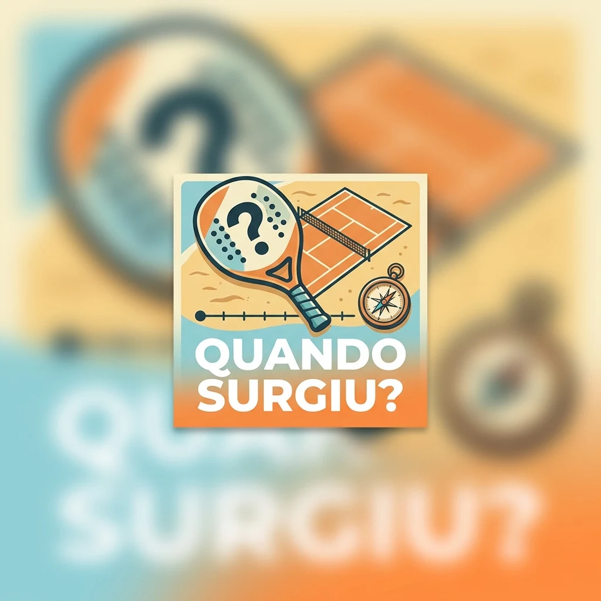
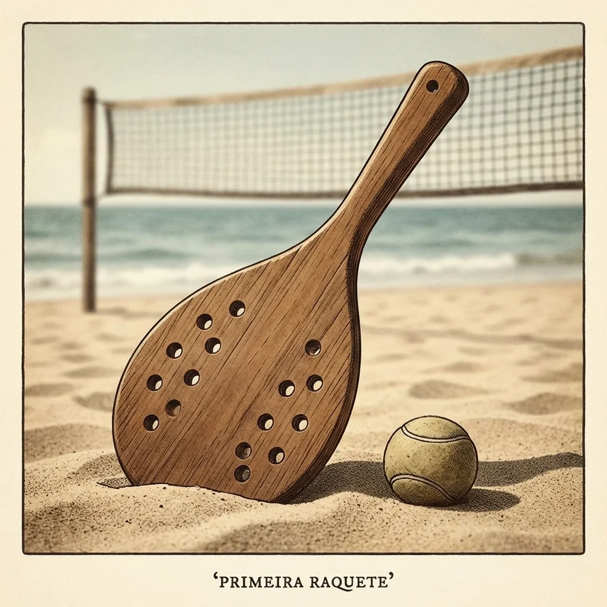
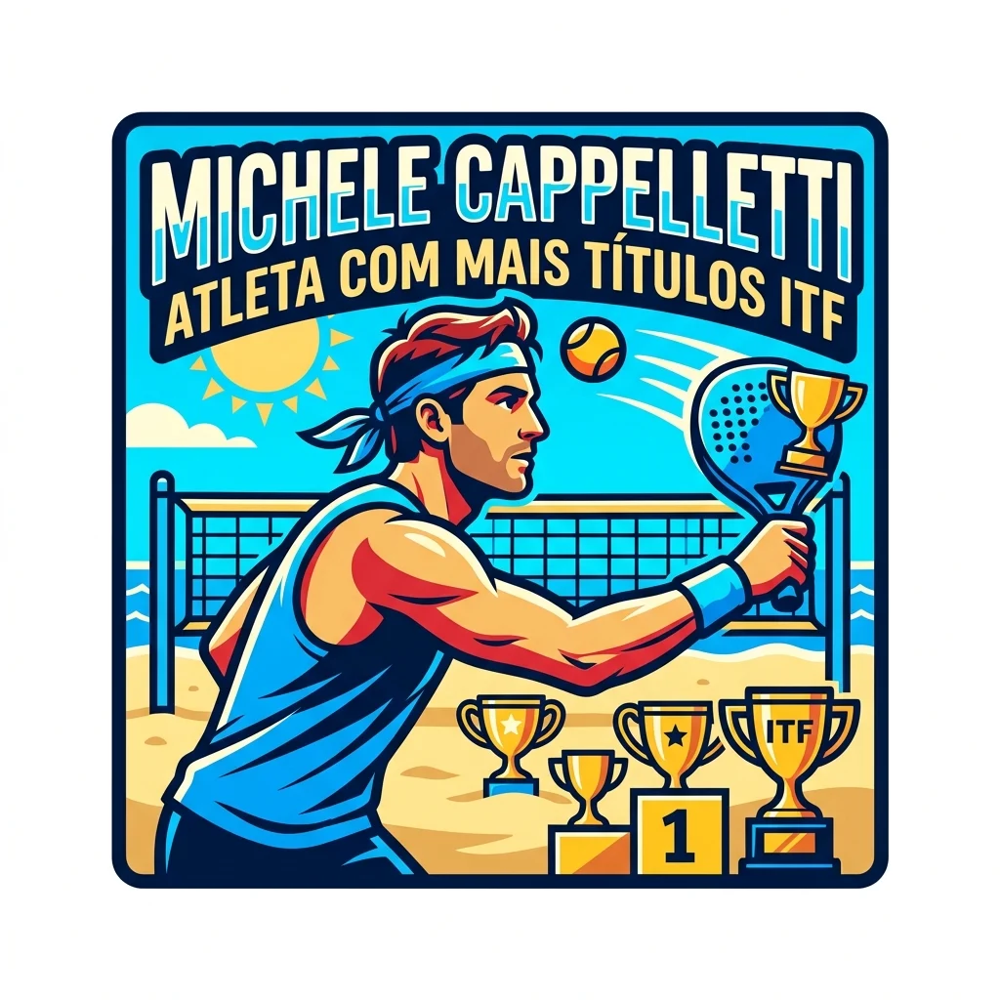

Meu primeiro post
Por: Matheus Fernandes
Boas-vindas ao meu portal de noticias!Aqui eu vou compartilhar tudo sobre o beach Tennis
vou compartilhar tudo sobre o mundo de Beach Tennis
Por: Matheus Fernandes
Boas-vindas ao meu portal de noticias!Aqui eu vou compartilhar tudo sobre o beach Tennis

Por: Gemini
O Beach Tennis surgiu na Itália, em 1987, na província de Ravenna

Por: Gemini
as primeiras raquetes de beach tennis da hisória eram feitas de madeira maciça e com muitas furações

Por: Gemini
O atleta com mais troféus de torneios ITF é o atleta michele Cappelletti com mais de 100 títulos oficiais reconhecidos!